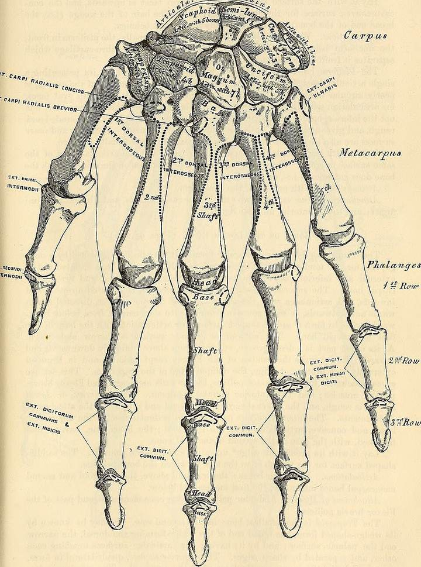

Software
These are the tools we build for our own work and then offer to others. Each one began with something Mangrove needed: a way to make sense of years of conversation, to see how an organisation really fits together, to talk about housework without a row, or to play with movement. Pick one to see what it is for, how it works, and what you can do with it today.
SketchIn
Photograph a hand-drawn page. SketchIn keeps the original, reads it, redraws it cleanly, suggests diagram forms you could use, and files it where you can search for it.
Breathing Room
A full-screen breathing practice with 17 timed practices, CO2 tables and calm worlds to breathe in. It records every session for you, and the system rests while you do.
Mindsweeper
Turns the thinking you have lost in chat logs, notes and drives into something you can search and use.
Org graph
A map of how an organisation really works, drawn beside its org chart: who depends on whom, and where knowledge sits with only one person.
Choreotope (name open)
A browser instrument where a flock of birds moves and sings in response to a phone, a camera or a dancer.
Would You Rather: chores edition
A card game for people who share a home: sort the chores by how they feel, then talk about who does what, without blame.
Epoch
The platform Mangrove runs on: every conversation kept as the record, and everything else, from wiki pages to calendars to agents' work, drawn from it.
Health

HealthStory AI
Tell your health story in your own words, in any order, over as many sessions as you like. It is kept as a record you own, and you can ask for it back as a narrative, a one-page summary or an export.
BodyScan AI
A guided walk through the body, toe to head, one region at a time. It gives you a summary to take to your appointment and lets you repeat the scan to see what has changed. It does not diagnose.